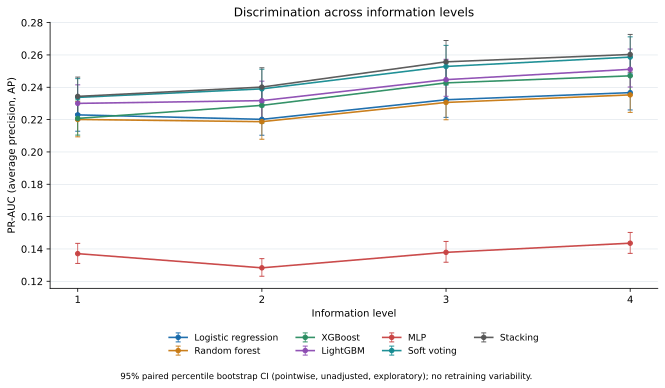
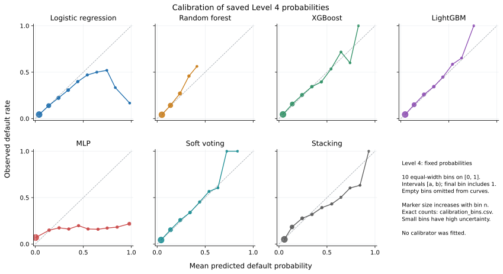

20 000 train-клиентов, 5 конфигураций, один refit на пару. Только оценка сохранённых вероятностей; новых обучений нет.
Оценены 28 сохранённых сочетаний семи моделей и четырёх уровней на общем test из 61,503 клиентов. Основная PR-метрика: PR-AUC (average precision, AP). В этом этапе новые обучения, predict, подбор параметров, калибратор и fairness-коррекции не выполнялись.
Лучшие отдельные точечные значения на Level 4: AP: Stacking (0.2603); ROC-AUC: Stacking (0.7707); Log-loss: Soft voting (0.2426); Brier: Soft voting (0.0671). Это описательное сравнение, а не формальный выбор core-модели по A2.
Exploratory pointwise интервалы разности AP с LR полностью выше нуля для: LightGBM, XGBoost, Soft voting, Stacking; полностью ниже нуля для: MLP. Ноль входит в интервал для: Random forest. Bootstrap p-values не вычислялись.
Парный DeLong с Bonferroni в семействе шести сравнений ROC-AUC с LR дал p_adj<0.05 для: LightGBM (ROC-AUC выше LR; Δ=+0.0077, p_adj=0.000512); Soft voting (ROC-AUC выше LR; Δ=+0.0115, p_adj=4.54e-17); Stacking (ROC-AUC выше LR; Δ=+0.0116, p_adj=1.7e-17); MLP (ROC-AUC ниже LR; Δ=-0.1063, p_adj=3.6e-172); Random forest (ROC-AUC ниже LR; Δ=-0.0104, p_adj=0.000154). Это вывод только о ROC-AUC; он не доказывает различия AP или эквивалентность остальных моделей.
RQ2, прирост AP Level 4 относительно Level 1: Logistic regression: +0.0138 [+0.0077, +0.0208]; Random forest: +0.0152 [+0.0098, +0.0206]; XGBoost: +0.0263 [+0.0194, +0.0328]; LightGBM: +0.0211 [+0.0149, +0.0278]; MLP: +0.0065 [-0.0003, +0.0126]; Soft voting: +0.0249 [+0.0185, +0.0316]; Stacking: +0.0259 [+0.0196, +0.0322]. Все интервалы парные; дополнительные baseline и последовательные сравнения приведены в таблицах.
Отрицательные точечные последовательные изменения AP: Logistic regression L2-L1: -0.0028 [-0.0068, +0.0010]; MLP L2-L1: -0.0088 [-0.0145, -0.0031]; Random forest L2-L1: -0.0014 [-0.0047, +0.0019]. Добавление истории не гарантирует улучшения каждой модели на каждом шаге; интервалы остаются exploratory.
Наблюдаемому ограничению approval-rate gap ≤5 п.п. одновременно по полу и возрасту соответствуют 8 из 21 уникальных сочетаний модели и порога. Половые и возрастные разрывы показаны отдельно; TPR-gap не подменяет approval-gap. Эти отметки не являются подтверждением общего правила отбора A2.
Интервалы абсолютных fairness-разрывов описательны. Из-за неотрицательности и излома абсолютной величины в нуле нижняя граница выше нуля сама по себе не является формальным тестом наличия bias.
По фиксированным порогам оба наблюдаемых approval-gap ограничения выполняют: t=0.5000: Logistic regression, LightGBM, XGBoost, Soft voting, Stacking, MLP, Random forest; t=0.1667: MLP; t=0.0909: подходящих вариантов нет. Это проверка точечных разрывов, не гарантия ограничения в популяции; интервалы разрывов приведены отдельно.
При L/m=1 наблюдаемая прибыль семи моделей и фиксированных порогов лежит от 0.804 до 0.839 m на заявителя; доля одобрений — от 94.2% до 100.0%. Наибольшее точечное значение среди этих фиксированных вариантов: Soft voting, t=0.5000. Это описательный максимум, не статистически установленный победитель; порог по test не оптимизировался. Approve-all/reject-all приведены как ориентиры.
При L/m=5 наблюдаемая прибыль семи моделей и фиксированных порогов лежит от 0.516 до 0.587 m на заявителя; доля одобрений — от 87.4% до 100.0%. Наибольшее точечное значение среди этих фиксированных вариантов: Soft voting, t=0.1667. Это описательный максимум, не статистически установленный победитель; порог по test не оптимизировался. Approve-all/reject-all приведены как ориентиры.
При L/m=10 наблюдаемая прибыль семи моделей и фиксированных порогов лежит от 0.112 до 0.407 m на заявителя; доля одобрений — от 66.3% до 100.0%. Наибольшее точечное значение среди этих фиксированных вариантов: Soft voting, t=0.0909. Это описательный максимум, не статистически установленный победитель; порог по test не оптимизировался. Approve-all/reject-all приведены как ориентиры.
Неизвестные fairness-группы сохранены отдельно (gender: 2; age: 0 заявок на общей test-выборке), исключены из бинарных разрывов, но остаются в общих метриках и прибыли. Ровно 25 лет относится к группе >=25.
При t=0.5 LR пропускает 4783 дефолтов и ошибочно отклоняет 211 заявок TARGET=0; MLP — соответственно 4257 и 2863. Ошибки всех моделей приведены рядом с precision/recall/F1. Изменение порога меняет этот баланс, поэтому дополнительные фиксированные пороги сохранены отдельно.
Для ансамблей при том же пороге: Soft voting: FN=4847, FP=83; Stacking: FN=4674, FP=284. Разный баланс пропущенных дефолтов и ошибочных отказов не означает превосходства по всем метрикам. Random forest при t=0.5 одобряет всех: нулевые групповые разрывы сочетаются с нулевым обнаружением дефолтов и не являются свидетельством полезного решения кредитного риска.
Precision при t=0.5 не определена для: Random forest, поскольку модель не предсказывает ни одного дефолта. Это пропуск с нулевым знаменателем, а не precision=0; соответствующий bootstrap CI может иметь 0 допустимых повторов. Нулевые recall/F1 при наличии фактических дефолтов сохраняются как нули.
MLP сохраняется во всех таблицах, несмотря на слабые значения AP и log-loss. Фактические n_iter_: L1=300, L2=300, L3=300, L4=243; агрегированные ConvergenceWarning за search+refit: L1=10, L2=10, L3=7, L4=3. Предупреждения включают CV-кандидатов, поэтому не равны числу ошибок выбранного refit. Train loss_ содержит особенности оптимизации и регуляризацию и не тождественен внешней log-loss. Эти наблюдения не устанавливают переобучение, ошибку предобработки или лимит итераций как причину слабого качества.
Вычислено 1000 общих парных bootstrap-повторов test, seed=42. При каждом повторе одни и те же клиентские веса применены ко всем моделям и уровням. Интервалы описывают test-неопределённость фиксированных обученных моделей; новые train-повторы не выполнялись.
| Model | AP | ROC-AUC | Log-loss | Brier |
|---|---|---|---|---|
| Logistic regression | 0.2367\n[0.2260, 0.2483] | 0.7590\n[0.7518, 0.7659] | 0.2506\n[0.2455, 0.2566] | 0.0683\n[0.0667, 0.0699] |
| Random forest | 0.2353\n[0.2245, 0.2469] | 0.7486\n[0.7413, 0.7559] | 0.2499\n[0.2455, 0.2545] | 0.0686\n[0.0671, 0.0701] |
| XGBoost | 0.2471\n[0.2361, 0.2587] | 0.7630\n[0.7555, 0.7703] | 0.2452\n[0.2405, 0.2503] | 0.0677\n[0.0662, 0.0693] |
| LightGBM | 0.2511\n[0.2402, 0.2637] | 0.7667\n[0.7594, 0.7741] | 0.2441\n[0.2396, 0.2490] | 0.0674\n[0.0659, 0.0690] |
| MLP | 0.1436\n[0.1373, 0.1502] | 0.6527\n[0.6447, 0.6605] | 0.9970\n[0.9681, 1.0276] | 0.1046\n[0.1024, 0.1070] |
| Soft voting | 0.2587\n[0.2475, 0.2712] | 0.7705\n[0.7633, 0.7780] | 0.2426\n[0.2378, 0.2474] | 0.0671\n[0.0655, 0.0687] |
| Stacking | 0.2603\n[0.2493, 0.2727] | 0.7707\n[0.7636, 0.7783] | 0.2485\n[0.2437, 0.2533] | 0.0679\n[0.0663, 0.0695] |
| Model | Level 1 | Level 2 | Level 3 | Level 4 |
|---|---|---|---|---|
| Logistic regression | 0.2229\n[0.2128, 0.2342] | 0.2202\n[0.2104, 0.2307] | 0.2323\n[0.2214, 0.2447] | 0.2367\n[0.2260, 0.2483] |
| Random forest | 0.2201\n[0.2094, 0.2312] | 0.2187\n[0.2079, 0.2296] | 0.2306\n[0.2199, 0.2418] | 0.2353\n[0.2245, 0.2469] |
| XGBoost | 0.2208\n[0.2104, 0.2322] | 0.2288\n[0.2179, 0.2405] | 0.2427\n[0.2320, 0.2549] | 0.2471\n[0.2361, 0.2587] |
| LightGBM | 0.2300\n[0.2194, 0.2415] | 0.2317\n[0.2207, 0.2438] | 0.2447\n[0.2344, 0.2573] | 0.2511\n[0.2402, 0.2637] |
| MLP | 0.1371\n[0.1310, 0.1435] | 0.1283\n[0.1231, 0.1340] | 0.1379\n[0.1318, 0.1447] | 0.1436\n[0.1373, 0.1502] |
| Soft voting | 0.2338\n[0.2231, 0.2453] | 0.2390\n[0.2279, 0.2512] | 0.2529\n[0.2414, 0.2659] | 0.2587\n[0.2475, 0.2712] |
| Stacking | 0.2344\n[0.2236, 0.2463] | 0.2401\n[0.2287, 0.2521] | 0.2558\n[0.2441, 0.2689] | 0.2603\n[0.2493, 0.2727] |
| Model | Delta AP L2-L1 | Delta AP L3-L1 | Delta AP L4-L1 |
|---|---|---|---|
| Logistic regression | -0.0028\n[-0.0068, 0.0010] | 0.0094\n[0.0040, 0.0150] | 0.0138\n[0.0077, 0.0208] |
| Random forest | -0.0014\n[-0.0047, 0.0019] | 0.0105\n[0.0060, 0.0145] | 0.0152\n[0.0098, 0.0206] |
| XGBoost | 0.0080\n[0.0033, 0.0127] | 0.0220\n[0.0162, 0.0278] | 0.0263\n[0.0194, 0.0328] |
| LightGBM | 0.0017\n[-0.0024, 0.0056] | 0.0147\n[0.0094, 0.0197] | 0.0211\n[0.0149, 0.0278] |
| MLP | -0.0088\n[-0.0145, -0.0031] | 0.0008\n[-0.0057, 0.0071] | 0.0065\n[-0.0003, 0.0126] |
| Soft voting | 0.0053\n[0.0008, 0.0096] | 0.0191\n[0.0133, 0.0247] | 0.0249\n[0.0185, 0.0316] |
| Stacking | 0.0058\n[0.0018, 0.0094] | 0.0214\n[0.0156, 0.0267] | 0.0259\n[0.0196, 0.0322] |
| Model | Delta AP L2-L1 | Delta AP L3-L2 | Delta AP L4-L3 |
|---|---|---|---|
| Logistic regression | -0.0028\n[-0.0068, 0.0010] | 0.0121\n[0.0081, 0.0161] | 0.0044\n[0.0006, 0.0080] |
| Random forest | -0.0014\n[-0.0047, 0.0019] | 0.0119\n[0.0088, 0.0148] | 0.0047\n[0.0008, 0.0093] |
| XGBoost | 0.0080\n[0.0033, 0.0127] | 0.0139\n[0.0094, 0.0187] | 0.0043\n[-0.0012, 0.0093] |
| LightGBM | 0.0017\n[-0.0024, 0.0056] | 0.0130\n[0.0089, 0.0173] | 0.0064\n[0.0014, 0.0113] |
| MLP | -0.0088\n[-0.0145, -0.0031] | 0.0096\n[0.0040, 0.0156] | 0.0057\n[-0.0006, 0.0117] |
| Soft voting | 0.0053\n[0.0008, 0.0096] | 0.0139\n[0.0092, 0.0184] | 0.0058\n[0.0014, 0.0107] |
| Stacking | 0.0058\n[0.0018, 0.0094] | 0.0156\n[0.0110, 0.0201] | 0.0045\n[-0.0002, 0.0091] |
| Model | Threshold | Profit (m) | Approval (%) | Gender gap (pp) | Age gap (pp) | G/A gap <=5pp |
|---|---|---|---|---|---|---|
| Logistic regression | 0.5000 | 0.838\n[0.834, 0.842] | 99.4\n[99.3, 99.4] | 0.31\n[0.17, 0.45] | 0.90\n[0.43, 1.44] | Yes/Yes |
| Random forest | 0.5000 | 0.839\n[0.834, 0.843] | 100.0\n[100.0, 100.0] | 0.00\n[0.00, 0.00] | 0.00\n[0.00, 0.00] | Yes/Yes |
| XGBoost | 0.5000 | 0.839\n[0.835, 0.843] | 99.7\n[99.7, 99.7] | 0.04\n[0.00, 0.14] | 0.39\n[0.09, 0.74] | Yes/Yes |
| LightGBM | 0.5000 | 0.839\n[0.835, 0.843] | 99.8\n[99.7, 99.8] | 0.00\n[0.00, 0.09] | 0.34\n[0.06, 0.64] | Yes/Yes |
| MLP | 0.5000 | 0.804\n[0.799, 0.808] | 94.2\n[94.0, 94.4] | 2.09\n[1.68, 2.51] | 2.83\n[1.70, 4.00] | Yes/Yes |
| Soft voting | 0.5000 | 0.839\n[0.835, 0.843] | 99.7\n[99.6, 99.7] | 0.05\n[0.00, 0.14] | 0.49\n[0.16, 0.86] | Yes/Yes |
| Stacking | 0.5000 | 0.839\n[0.835, 0.843] | 99.1\n[99.0, 99.1] | 0.36\n[0.20, 0.53] | 1.94\n[1.31, 2.61] | Yes/Yes |
| Model | Threshold | Profit (m) | Approval (%) | Gender gap (pp) | Age gap (pp) | G/A gap <=5pp |
|---|---|---|---|---|---|---|
| Logistic regression | 0.5000 | 0.527\n[0.515, 0.539] | 99.4\n[99.3, 99.4] | 0.31\n[0.17, 0.45] | 0.90\n[0.43, 1.44] | Yes/Yes |
| Logistic regression | 0.1667 | 0.578\n[0.568, 0.588] | 87.4\n[87.2, 87.7] | 5.05\n[4.46, 5.64] | 17.94\n[16.17, 19.75] | No/No |
| Random forest | 0.5000 | 0.516\n[0.503, 0.528] | 100.0\n[100.0, 100.0] | 0.00\n[0.00, 0.00] | 0.00\n[0.00, 0.00] | Yes/Yes |
| Random forest | 0.1667 | 0.577\n[0.566, 0.587] | 89.2\n[89.0, 89.5] | 1.64\n[1.15, 2.21] | 18.38\n[16.68, 20.18] | Yes/No |
| XGBoost | 0.5000 | 0.523\n[0.511, 0.535] | 99.7\n[99.7, 99.7] | 0.04\n[0.00, 0.14] | 0.39\n[0.09, 0.74] | Yes/Yes |
| XGBoost | 0.1667 | 0.584\n[0.573, 0.593] | 89.7\n[89.4, 89.9] | 3.57\n[3.06, 4.08] | 16.48\n[14.75, 18.30] | Yes/No |
| LightGBM | 0.5000 | 0.521\n[0.509, 0.533] | 99.8\n[99.7, 99.8] | 0.00\n[0.00, 0.09] | 0.34\n[0.06, 0.64] | Yes/Yes |
| LightGBM | 0.1667 | 0.586\n[0.575, 0.596] | 89.0\n[88.8, 89.3] | 3.29\n[2.75, 3.78] | 18.09\n[16.40, 20.04] | Yes/No |
| MLP | 0.5000 | 0.527\n[0.514, 0.538] | 94.2\n[94.0, 94.4] | 2.09\n[1.68, 2.51] | 2.83\n[1.70, 4.00] | Yes/Yes |
| MLP | 0.1667 | 0.527\n[0.515, 0.538] | 91.6\n[91.4, 91.8] | 2.79\n[2.29, 3.23] | 4.55\n[3.24, 6.01] | Yes/Yes |
| Soft voting | 0.5000 | 0.524\n[0.512, 0.536] | 99.7\n[99.6, 99.7] | 0.05\n[0.00, 0.14] | 0.49\n[0.16, 0.86] | Yes/Yes |
| Soft voting | 0.1667 | 0.587\n[0.576, 0.597] | 89.1\n[88.8, 89.3] | 4.08\n[3.53, 4.63] | 16.80\n[15.12, 18.59] | Yes/No |
| Stacking | 0.5000 | 0.535\n[0.523, 0.546] | 99.1\n[99.0, 99.1] | 0.36\n[0.20, 0.53] | 1.94\n[1.31, 2.61] | Yes/Yes |
| Stacking | 0.1667 | 0.580\n[0.569, 0.591] | 92.6\n[92.4, 92.8] | 3.04\n[2.60, 3.50] | 13.41\n[11.91, 15.02] | Yes/No |
| Model | Threshold | Profit (m) | Approval (%) | Gender gap (pp) | Age gap (pp) | G/A gap <=5pp |
|---|---|---|---|---|---|---|
| Logistic regression | 0.5000 | 0.138\n[0.116, 0.161] | 99.4\n[99.3, 99.4] | 0.31\n[0.17, 0.45] | 0.90\n[0.43, 1.44] | Yes/Yes |
| Logistic regression | 0.0909 | 0.393\n[0.378, 0.406] | 71.2\n[70.9, 71.6] | 8.20\n[7.41, 8.98] | 28.41\n[26.33, 30.58] | No/No |
| Random forest | 0.5000 | 0.112\n[0.089, 0.135] | 100.0\n[100.0, 100.0] | 0.00\n[0.00, 0.00] | 0.00\n[0.00, 0.00] | Yes/Yes |
| Random forest | 0.0909 | 0.378\n[0.365, 0.391] | 66.3\n[65.9, 66.7] | 6.33\n[5.55, 7.15] | 31.75\n[29.71, 33.75] | No/No |
| XGBoost | 0.5000 | 0.128\n[0.106, 0.150] | 99.7\n[99.7, 99.7] | 0.04\n[0.00, 0.14] | 0.39\n[0.09, 0.74] | Yes/Yes |
| XGBoost | 0.0909 | 0.394\n[0.379, 0.409] | 74.3\n[73.9, 74.7] | 7.98\n[7.23, 8.72] | 29.61\n[27.49, 31.72] | No/No |
| LightGBM | 0.5000 | 0.124\n[0.102, 0.146] | 99.8\n[99.7, 99.8] | 0.00\n[0.00, 0.09] | 0.34\n[0.06, 0.64] | Yes/Yes |
| LightGBM | 0.0909 | 0.400\n[0.385, 0.414] | 73.0\n[72.7, 73.4] | 7.08\n[6.35, 7.85] | 31.32\n[29.22, 33.40] | No/No |
| MLP | 0.5000 | 0.181\n[0.158, 0.201] | 94.2\n[94.0, 94.4] | 2.09\n[1.68, 2.51] | 2.83\n[1.70, 4.00] | Yes/Yes |
| MLP | 0.0909 | 0.213\n[0.191, 0.233] | 90.2\n[89.9, 90.4] | 3.03\n[2.51, 3.52] | 5.46\n[3.93, 6.91] | Yes/No |
| Soft voting | 0.5000 | 0.130\n[0.107, 0.152] | 99.7\n[99.6, 99.7] | 0.05\n[0.00, 0.14] | 0.49\n[0.16, 0.86] | Yes/Yes |
| Soft voting | 0.0909 | 0.407\n[0.392, 0.422] | 73.9\n[73.6, 74.3] | 7.51\n[6.77, 8.26] | 29.68\n[27.61, 31.73] | No/No |
| Stacking | 0.5000 | 0.155\n[0.132, 0.176] | 99.1\n[99.0, 99.1] | 0.36\n[0.20, 0.53] | 1.94\n[1.31, 2.61] | Yes/Yes |
| Stacking | 0.0909 | 0.391\n[0.374, 0.406] | 80.9\n[80.6, 81.2] | 6.26\n[5.59, 6.91] | 24.87\n[22.90, 26.85] | No/No |
| Model | Missed defaults (FN) | False rejections (FP) | Precision | Recall | F1 |
|---|---|---|---|---|---|
| Logistic regression | 4783 | 211 | 0.4631 | 0.0367 | 0.0679 |
| Random forest | 4965 | 0 | -- | 0.0000 | 0.0000 |
| XGBoost | 4858 | 76 | 0.5847 | 0.0216 | 0.0416 |
| LightGBM | 4883 | 54 | 0.6029 | 0.0165 | 0.0322 |
| MLP | 4257 | 2863 | 0.1983 | 0.1426 | 0.1659 |
| Soft voting | 4847 | 83 | 0.5871 | 0.0238 | 0.0457 |
| Stacking | 4674 | 284 | 0.5061 | 0.0586 | 0.1051 |
| Model | Reference | Delta AP |
|---|---|---|
| Random forest | Logistic regression | -0.0014\n[-0.0091, 0.0063] |
| XGBoost | Logistic regression | 0.0104\n[0.0035, 0.0172] |
| LightGBM | Logistic regression | 0.0144\n[0.0072, 0.0216] |
| MLP | Logistic regression | -0.0931\n[-0.1019, -0.0846] |
| Soft voting | Logistic regression | 0.0220\n[0.0167, 0.0269] |
| Stacking | Logistic regression | 0.0236\n[0.0184, 0.0283] |
| Model | Delta ROC-AUC | p (raw) | p (Bonferroni) | Reject at 0.05 |
|---|---|---|---|---|
| LightGBM | +0.0077 | 8.53e-05 | 0.000512 | Yes |
| XGBoost | +0.0039 | 0.0475 | 0.285 | No |
| Soft voting | +0.0115 | 7.56e-18 | 4.54e-17 | Yes |
| Stacking | +0.0116 | 2.84e-18 | 1.7e-17 | Yes |
| MLP | -0.1063 | 6e-173 | 3.6e-172 | Yes |
| Random forest | -0.0104 | 2.57e-05 | 0.000154 | Yes |


Исходная размеченная выборка: 307,511; development 246,008, test 61,503; пилот 20,000; не использовано в обучении 226,008 development-заявок. Число исходных подготовленных признаков по уровням: {'1': 124, '2': 178, '3': 264, '4': 322}. Завершено CV-fit 420, refit 28; последний invocation 10640.1 с. refit_seconds входит в search_and_refit_seconds; их нельзя суммировать. Время invocation также включает IO и отчёты. Python 3.13.9; software versions: {'joblib': '1.5.2', 'lightgbm': '4.7.0', 'numpy': '2.3.5', 'pandas': '2.3.3', 'pyarrow': '21.0.0', 'scikit-learn': '1.7.2', 'scipy': '1.16.3', 'threadpoolctl': '3.5.0', 'xgboost': '3.2.0'}. Threads=2, search_n_jobs=1, pre_dispatch=1. Модель CPU и общий объём RAM не сохранены в журналах обучения пилота; оборудование текущей оценки не подставляется. Seeds: выбор пилотных клиентов 42, CV 42, поиск 42. Размеры train/validation CV-фолдов: fold 0: 13333/6667, fold 1: 13333/6667, fold 2: 13334/6666. Баланс классов (0/1): Labelled data: 282686/24825, Development: 226148/19860, Pilot train: 18385/1615, Fixed test: 56538/4965.
| sample | rows | class_0 | class_1 |
|---|---|---|---|
| Labelled data | 307511 | 282686 | 24825 |
| Development | 246008 | 226148 | 19860 |
| Pilot train | 20000 | 18385 | 1615 |
| Fixed test | 61503 | 56538 | 4965 |
| fold | train_rows | validation_rows |
|---|---|---|
| 0 | 13333 | 6667 |
| 1 | 13333 | 6667 |
| 2 | 13334 | 6666 |
| model | level | n_iter_ | max_iter | tol | n_iter_no_change | loss_curve_points | final_training_loss | best_cv_log_loss | test_log_loss | test_ap | warning_count_search_and_refit |
|---|---|---|---|---|---|---|---|---|---|---|---|
| mlp | 1 | 300 | 300 | 0.0001 | 20 | 300 | 0.111438 | 0.476026 | 0.444189 | 0.137106 | 10 |
| mlp | 2 | 300 | 300 | 0.0001 | 20 | 300 | 0.062838 | 0.636791 | 0.603611 | 0.128328 | 10 |
| mlp | 3 | 300 | 300 | 0.0001 | 20 | 300 | 0.034656 | 0.774411 | 0.727068 | 0.137907 | 7 |
| mlp | 4 | 243 | 300 | 0.0001 | 20 | 243 | 0.004645 | 0.825887 | 0.997038 | 0.143575 | 3 |
Материалы готовы для предварительного раздела статьи.
Полные сценарии, TPR-разрывы и ориентиры прибыли находятся в приложении tables/; все числовые результаты и промежуточные bootstrap-файлы сохранены отдельно.
Все code-ячейки notebook исполнены в чистом Python-процессе; реальные outputs сохранены. Попытка запуска Jupyter-ядра не вернула outputs и была прервана. Это подтверждает исполнение Python-кода, но не проверку notebook в Jupyter kernel. Готовые bootstrap-повторы переиспользованы; новых fit/predict не было.